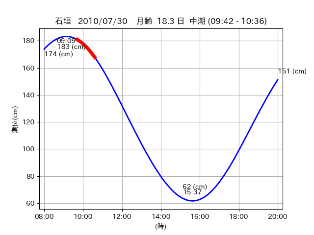
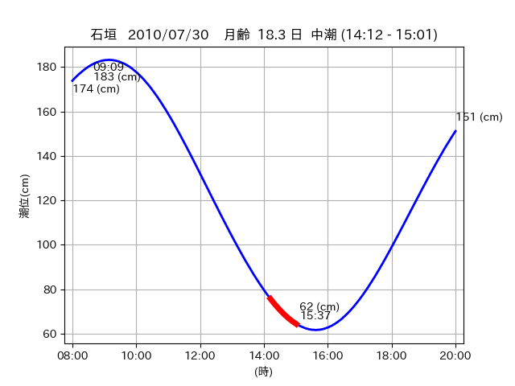

<!DOCTYPE html>
<html>
<head>
    
    <meta http-equiv="content-type" content="text/html; charset=UTF-8" />
    
        <script>
            L_NO_TOUCH = false;
            L_DISABLE_3D = false;
        </script>
    
    <style>html, body {width: 100%;height: 100%;margin: 0;padding: 0;}</style>
    <style>#map {position:absolute;top:0;bottom:0;right:0;left:0;}</style>
    <script src="https://cdn.jsdelivr.net/npm/leaflet@1.9.3/dist/leaflet.js"></script>
    <script src="https://code.jquery.com/jquery-3.7.1.min.js"></script>
    <script src="https://cdn.jsdelivr.net/npm/bootstrap@5.2.2/dist/js/bootstrap.bundle.min.js"></script>
    <script src="https://cdnjs.cloudflare.com/ajax/libs/Leaflet.awesome-markers/2.0.2/leaflet.awesome-markers.js"></script>
    <link rel="stylesheet" href="https://cdn.jsdelivr.net/npm/leaflet@1.9.3/dist/leaflet.css"/>
    <link rel="stylesheet" href="https://cdn.jsdelivr.net/npm/bootstrap@5.2.2/dist/css/bootstrap.min.css"/>
    <link rel="stylesheet" href="https://netdna.bootstrapcdn.com/bootstrap/3.0.0/css/bootstrap-glyphicons.css"/>
    <link rel="stylesheet" href="https://cdn.jsdelivr.net/npm/@fortawesome/fontawesome-free@6.2.0/css/all.min.css"/>
    <link rel="stylesheet" href="https://cdnjs.cloudflare.com/ajax/libs/Leaflet.awesome-markers/2.0.2/leaflet.awesome-markers.css"/>
    <link rel="stylesheet" href="https://cdn.jsdelivr.net/gh/python-visualization/folium/folium/templates/leaflet.awesome.rotate.min.css"/>
    
            <meta name="viewport" content="width=device-width,
                initial-scale=1.0, maximum-scale=1.0, user-scalable=no" />
            <style>
                #map_63ae83462a841dd234f8296c18b93e89 {
                    position: relative;
                    width: 2048.0px;
                    height: 1600.0px;
                    left: 0.0%;
                    top: 0.0%;
                }
                .leaflet-container { font-size: 1rem; }
            </style>
        
</head>
<body>
    
    
            <div class="folium-map" id="map_63ae83462a841dd234f8296c18b93e89" ></div>
        
</body>
<script>
    
    
            var map_63ae83462a841dd234f8296c18b93e89 = L.map(
                "map_63ae83462a841dd234f8296c18b93e89",
                {
                    center: [24.366, 124.038],
                    crs: L.CRS.EPSG3857,
                    ...{
  "zoom": 12,
  "zoomControl": true,
  "preferCanvas": false,
}

                }
            );

            

        
    
            var tile_layer_949a4ae5b69cdd74a54809c4d8ebaf4b = L.tileLayer(
                "https://cyberjapandata.gsi.go.jp/xyz/seamlessphoto/{z}/{x}/{y}.jpg",
                {
  "minZoom": 0,
  "maxZoom": 18,
  "maxNativeZoom": 18,
  "noWrap": false,
  "attribution": "\u5730\u7406\u9662\u5730\u56f3",
  "subdomains": "abc",
  "detectRetina": false,
  "tms": false,
  "opacity": 1,
}

            );
        
    
            tile_layer_949a4ae5b69cdd74a54809c4d8ebaf4b.addTo(map_63ae83462a841dd234f8296c18b93e89);
        
    
            var marker_d8014176f31682f1b7718d2c299e6d1d = L.marker(
                [24.3371, 124.0662],
                {
}
            ).addTo(map_63ae83462a841dd234f8296c18b93e89);
        
    
            var icon_ddae2e778b41412e2a08cd820fad5e5d = L.AwesomeMarkers.icon(
                {
  "markerColor": "orange",
  "iconColor": "white",
  "icon": "info-sign",
  "prefix": "glyphicon",
  "extraClasses": "fa-rotate-0",
}
            );
        
    
        var popup_249e2bb5b8622e8c174ef914115e5455 = L.popup({
  "maxWidth": "100%",
});

        
            
                var html_3b74cfbcaac9ff3680d10974f79ab6a9 = $(`<div id="html_3b74cfbcaac9ff3680d10974f79ab6a9" style="width: 100.0%; height: 100.0%;"><table><tr><td></td></tr><tr><td><center>20100730 No.1 </center></table></td></tr></table</div>`)[0];
                popup_249e2bb5b8622e8c174ef914115e5455.setContent(html_3b74cfbcaac9ff3680d10974f79ab6a9);
            
        

        marker_d8014176f31682f1b7718d2c299e6d1d.bindPopup(popup_249e2bb5b8622e8c174ef914115e5455)
        ;

        
    
    
                marker_d8014176f31682f1b7718d2c299e6d1d.setIcon(icon_ddae2e778b41412e2a08cd820fad5e5d);
            
    
            var poly_line_7a39ec0e189c38b7bf5853a110970a1f = L.polyline(
                [[24.3371, 124.0662], [24.3531, 124.0674]],
                {"bubblingMouseEvents": true, "color": "#FF00FF", "dashArray": null, "dashOffset": null, "fill": false, "fillColor": "#FF00FF", "fillOpacity": 0.2, "fillRule": "evenodd", "lineCap": "round", "lineJoin": "round", "noClip": false, "opacity": 1.0, "smoothFactor": 1.0, "stroke": true, "weight": 3}
            ).addTo(map_63ae83462a841dd234f8296c18b93e89);
        
    
            var marker_936c32f7aa575aa9d7e2466aa4070ca8 = L.marker(
                [24.345, 124.0684],
                {
}
            ).addTo(map_63ae83462a841dd234f8296c18b93e89);
        
    
            var icon_ff9e5815a73b425964138e5e8f6b1d2c = L.AwesomeMarkers.icon(
                {
  "markerColor": "orange",
  "iconColor": "white",
  "icon": "info-sign",
  "prefix": "glyphicon",
  "extraClasses": "fa-rotate-0",
}
            );
        
    
        var popup_54b65a044a1c47ef1a1fa8b835386162 = L.popup({
  "maxWidth": "100%",
});

        
            
                var html_45f78d2df1a003d4b242ac19155fab9a = $(`<div id="html_45f78d2df1a003d4b242ac19155fab9a" style="width: 100.0%; height: 100.0%;"><table><tr><td></td></tr><tr><td><center>20100730 No.2 </center></table></td></tr></table</div>`)[0];
                popup_54b65a044a1c47ef1a1fa8b835386162.setContent(html_45f78d2df1a003d4b242ac19155fab9a);
            
        

        marker_936c32f7aa575aa9d7e2466aa4070ca8.bindPopup(popup_54b65a044a1c47ef1a1fa8b835386162)
        ;

        
    
    
                marker_936c32f7aa575aa9d7e2466aa4070ca8.setIcon(icon_ff9e5815a73b425964138e5e8f6b1d2c);
            
    
            var poly_line_ba87da46b95afb02dffb4d93c00b751b = L.polyline(
                [[24.345, 124.0684], [24.3523, 124.0691]],
                {"bubblingMouseEvents": true, "color": "#FF00FF", "dashArray": null, "dashOffset": null, "fill": false, "fillColor": "#FF00FF", "fillOpacity": 0.2, "fillRule": "evenodd", "lineCap": "round", "lineJoin": "round", "noClip": false, "opacity": 1.0, "smoothFactor": 1.0, "stroke": true, "weight": 3}
            ).addTo(map_63ae83462a841dd234f8296c18b93e89);
        
    
            var marker_4a7371588badc8cc4cf2e22bf8c823f3 = L.marker(
                [24.366, 124.0353],
                {
}
            ).addTo(map_63ae83462a841dd234f8296c18b93e89);
        
    
            var icon_303a3e9a335d9c14d90c266ce64e9ba3 = L.AwesomeMarkers.icon(
                {
  "markerColor": "orange",
  "iconColor": "white",
  "icon": "info-sign",
  "prefix": "glyphicon",
  "extraClasses": "fa-rotate-0",
}
            );
        
    
        var popup_75fd93c5a919a97710afaaac89b3f0e0 = L.popup({
  "maxWidth": "100%",
});

        
            
                var html_ad9e119e2e040502464e780b4f69d06e = $(`<div id="html_ad9e119e2e040502464e780b4f69d06e" style="width: 100.0%; height: 100.0%;"><table><tr><td></td></tr><tr><td><center>20100730 No.3 </center></table></td></tr></table</div>`)[0];
                popup_75fd93c5a919a97710afaaac89b3f0e0.setContent(html_ad9e119e2e040502464e780b4f69d06e);
            
        

        marker_4a7371588badc8cc4cf2e22bf8c823f3.bindPopup(popup_75fd93c5a919a97710afaaac89b3f0e0)
        ;

        
    
    
                marker_4a7371588badc8cc4cf2e22bf8c823f3.setIcon(icon_303a3e9a335d9c14d90c266ce64e9ba3);
            
    
            var poly_line_cade237f944e877b983349f96845f70f = L.polyline(
                [[24.366, 124.0353], [24.3666, 124.04]],
                {"bubblingMouseEvents": true, "color": "#FF00FF", "dashArray": null, "dashOffset": null, "fill": false, "fillColor": "#FF00FF", "fillOpacity": 0.2, "fillRule": "evenodd", "lineCap": "round", "lineJoin": "round", "noClip": false, "opacity": 1.0, "smoothFactor": 1.0, "stroke": true, "weight": 3}
            ).addTo(map_63ae83462a841dd234f8296c18b93e89);
        
</script>
</html>